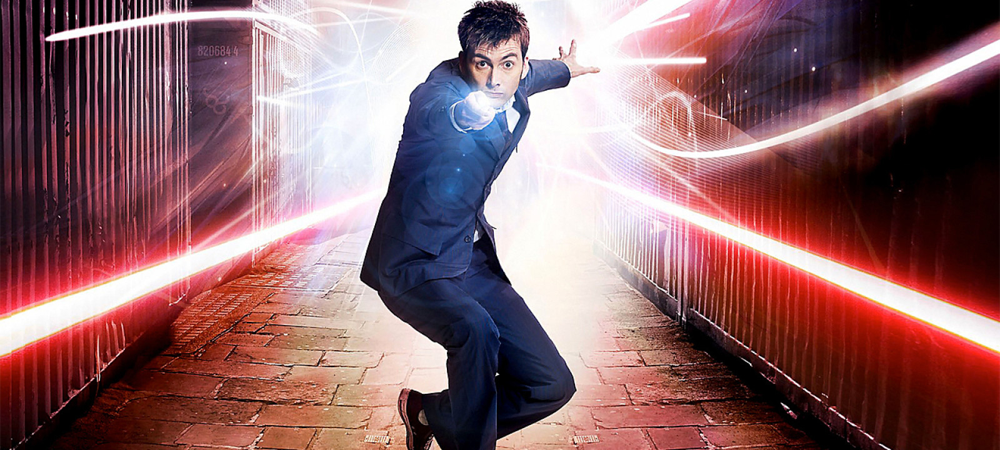

Waking on Christmas Day in his new form, the Doctor fought the Sycorax high above London, where he lost a hand but grew a new one with remnant regenerative power. Travelling with Rose and Mickey he battled Cybermen, werewolves and possibly, the Devil itself. Losing Rose in a parallel universe – but later leaving her with a half-human clone of himself – the Doctor travelled on. He hid as a human schoolmaster to spare the Family of Blood his wrath, he defeated his nemesis the Master once more and met River Song for the first time. Told that he would die when someone knocked four times, the Doctor remained defiant, but to no avail. Reeling from his confrontation with the Time Lords and fatally dosed with radiation, the Tenth Doctor’s song ended, as his violent regeneration burned the TARDIS and sent it crashing through space….